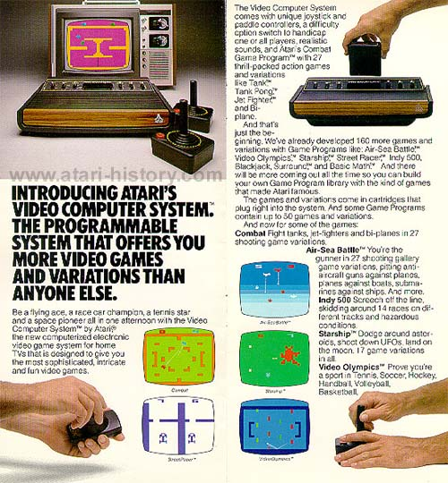

Atari's shining star: The Atari 2600 Video Computer System, Model # CX-2600.
The initial concept for the Atari 2600 was designed in Grass Valley, California. Then
it was moved down to "secret" offices on Division St. in Campbell, CA. The
Atari 2600 team consisted of Jay Miner, Steve Mayer, Ron Milner and Joe Decuir. The case design was done by Douglas Hardy and Fredrick
Thompson. Originally the whole idea around the Atari
2600 was to design a new console system that would have a longer sales
life then past Atari game consoles. Originally Atari started
out selling home game consoles such as PONG, Super Pong, Stunt Cycle, Video
Pinball and others. However their sales life (how long they
would sell strong before people grew bored and wanted a new product to
come out) was short lived. So the idea around the Atari 2600
was to design a new system that would have a shelf life of up to 2-3 years.
Atari had originally planned to sell a total of 10 games for the Atari
2600. The original game boxes used to be marked 01, 02, 03
for the original intention of selling only 10 different games.

Atari included every conceivable form of flexibility into the console.
There were separate difficult switches for both the left and right player,
the console had a selection for both Black & White and Color televisions.
The game console also came packaged with not only a set of joystick controllers,
but also a set of paddle controllers giving the customer the ability to
purchase nearly any game they wanted and not have to worry about whether
it would work with the console or not.
Another interesting feature about the Atari 2600 were its games.
Most games came with dozens of different variations of the game so that
customers could try out all different combinations and never grow bored
as quickly as simply having one game, one variation to play.
The Atari 2600 took on a life of its own when Atari introduced the first
home licensed version of Space Invaders. People couldn't get
enough. That's when Atari realized it could cash in on licensing
exclusive rights to sell home versions of the most popular arcade games.
Games such as Space Invaders, Missile Command, Asteroids, and Defender sent
sales sky-rocketing because of the close conversion down to the Atari 2600's
graphics capabilities. However with competition in the market, game
adapters playing Atari 2600 games, behind the scene's financial funny-business
and poorly executed licensing deals, like the E.T. license that cost $21million
and was never recouped on the 5 million cartridges made, but only 1.5million
sold, things started to come against Atari and the industry as a whole.
Some say Pac Man for the 2600 was Atari's downfall and this is far from the
truth, while the game differed in colors and maze layout, it sill sold 7.7
million cartridges and earning gross profits of $200 million for Atari. It
was programmed by Tod Frye. Tod also worked on the Atari Swordquest series
and also was putting the finishing touches on an Atari 2600 version of
Xevious (a feat of masterful programming since the game was so complex)
when Atari was sold, 2600 Xevious was never finished or released.
The Atari 2600 also saw a flood of cheaply made games from dozens of third
party companies looking for an easy and quick "in" to capitalize on the
video game craze. This flood of low quality titles cause a
flood of unwanted and overproduced cartridges which no one wanted.
In the past people would buy a cartridge without question, now they were
reading game reviews and only buying the best rated titles.
Suddenly bargain basement sales of cartridges were being held.
People assumed that the "VIDEOGAME FAD" was ending and sales of consoles
and accessories began to slump. Terrified corporate executives
with no real knowledge of this new field panicked, funds were pulled,
company's began to fold overnight, hundreds of announced games and products
suddenly disappeared never to be heard of again. Atari felt
this huge shake-up right up to its parent company Warner Communications.
The Great Video Game Crash had happened and in its wake it left many companies
in bankruptcy, others looking to PC gaming for revenue and Atari
limping into the sunset, its image and ego badly hurt, but unlike other
companies it lived on for quite sometime and so did the Atari 2600, in
fact the Atari 2600 was replaced in 1986 by a newer, more modern replacement
called the Atari 2600 jr.
Even though consoles such as the Sony Playstation, Sega Dreamcast, Xbox ,Wii
and even older discontinued systems like the Atari Jaguar 64 have power that are 100's of time greater then the Atari 2600. The little
VCS that could, even though its discontinued is still going and is still
the worlds most popular Video Game System.